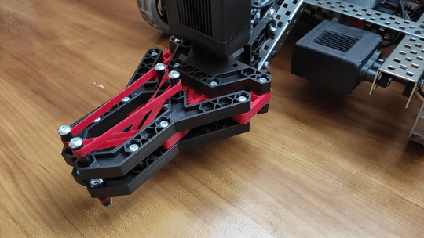
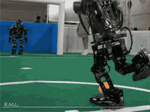
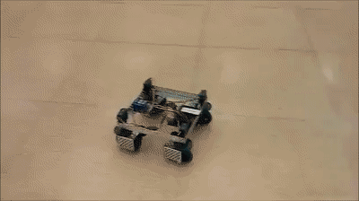
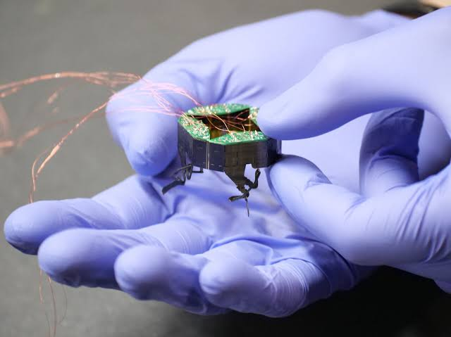
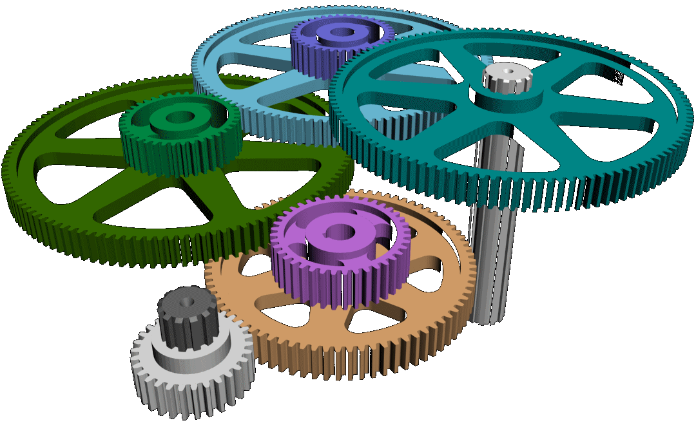

The mechanical aspect of robotics is extremely important. It is the robot itself after all. In order for a robot to function properly, it must be structurally sound mechanically to prevent failure during operation. In competitive robotics, building a mechanically sound robot is key to getting a good grade from judges.
This can be split into 4 categories:

The durability of the robot is very important to the overall design. Engineers need to make sure that the robot can withstand the forces it experiences. For robots in real life, material selection is very important to durability. Engineers need to find the material that is not only strong but also cost effective. For VEX robotics, engineers need to find the right VEX parts that will ensure maximum structural integrity in the design.

Building with precision in mind is also very important in robotics. Engineers need to make sure all of the joints have enough degrees of freedom to make all of the precise movements that are required. Additionally, sensors are used in robotics to make sure the robot starts and stops at the correct times. For example, ultrasonic sensors can be used in order to detect distance to prevent any collisions. Also, engineers have to take very accurate measurements to ensure that the robot can make precise movements.

When building robots, engineers have to keep cost in mind. If they use too many resources to build it, then they will not be within their budget. Additionally, there may be size constraints depending on the situation. For example, a robotics competition could have very strict constraints. Or, the robot needs to fit into a very tight space. Engineers need to figure out how to make the robots as small as possible while not sacrificing any of the functionality.

Geartrains are used to generate speed or torque (depending on the situation you are in) through rotational motion. A smaller gear driving a larger gear creates more torque and less speed, whereas a larger gear driving a smaller gear makes more speed and less torque. There are many different types of gears. Spur gears are the most common type of gear, transfering motion between shafts. Chain and sprocket gears are used to transfer motion between shafts that are farther apart. Additionally, bevel gears are used to change the direction ofthe rotational motion.